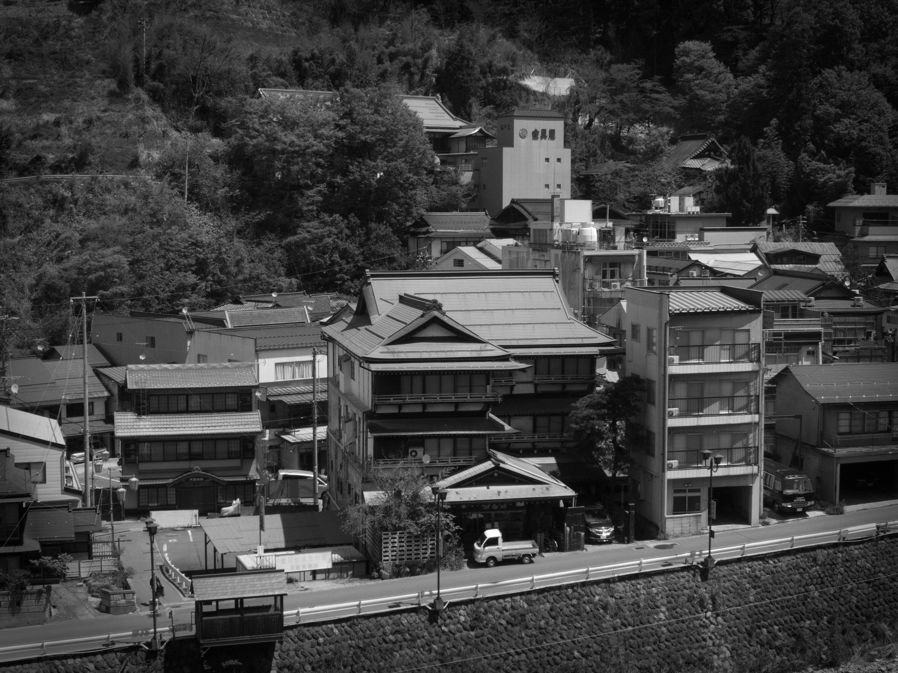
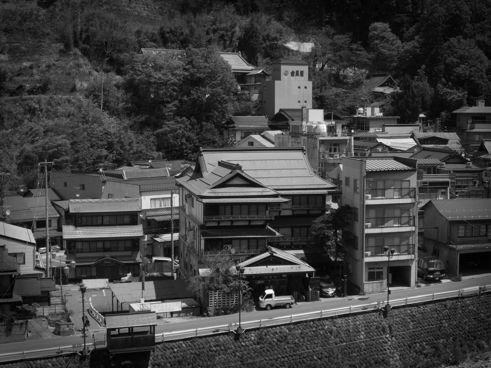
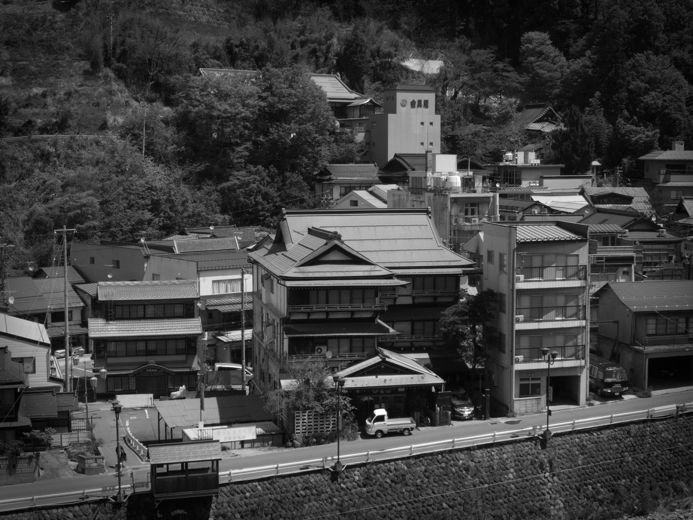

I was born in San Diego and soon after moved to Virginia Beach. Through out my life I have lived all accross the the United States. In 2012 I got married to my wife Aki, and we moved to Japan in 2013. Japan is a great place to live if you have hobbie like mine!
Before we moved to Japan, I was attending classes at Seattle Central Community College for Nursing. I decided to make a change and get a TEFL certification, and soon after attended an online university to obtain a Bachelors of Education so I could teach in Japan. In 2022, I enrolled in Code Fellows' software engineering program.
My goals are to master web development and move into other are of engineering, perhaps machine learning or mobile app development.
